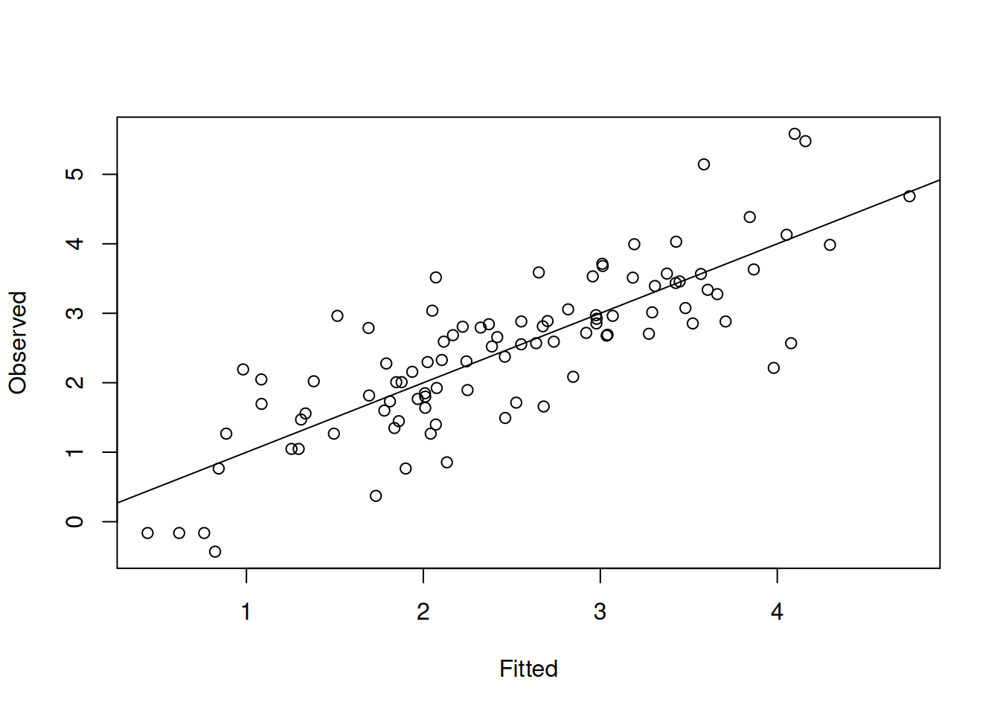
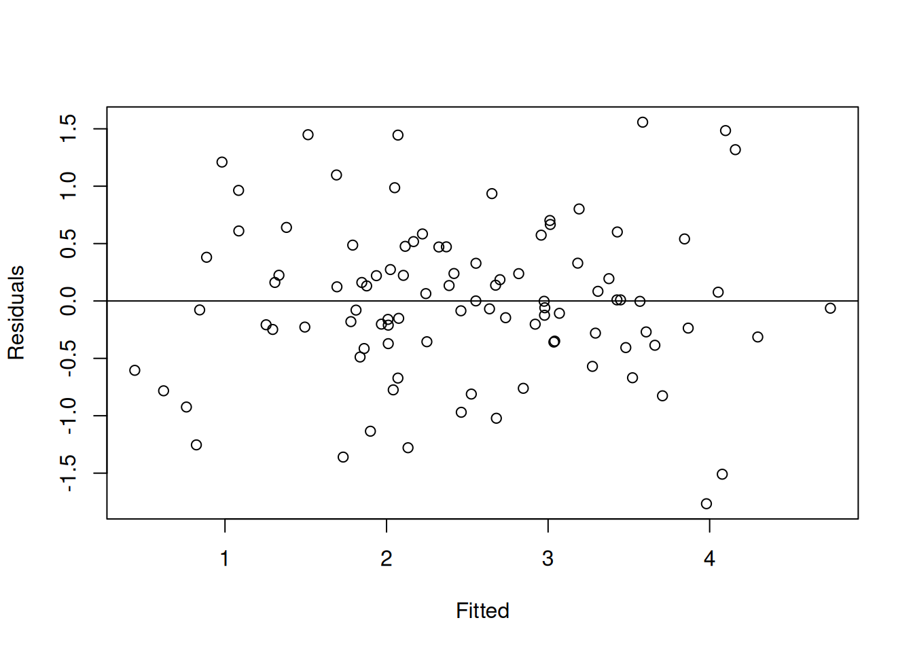
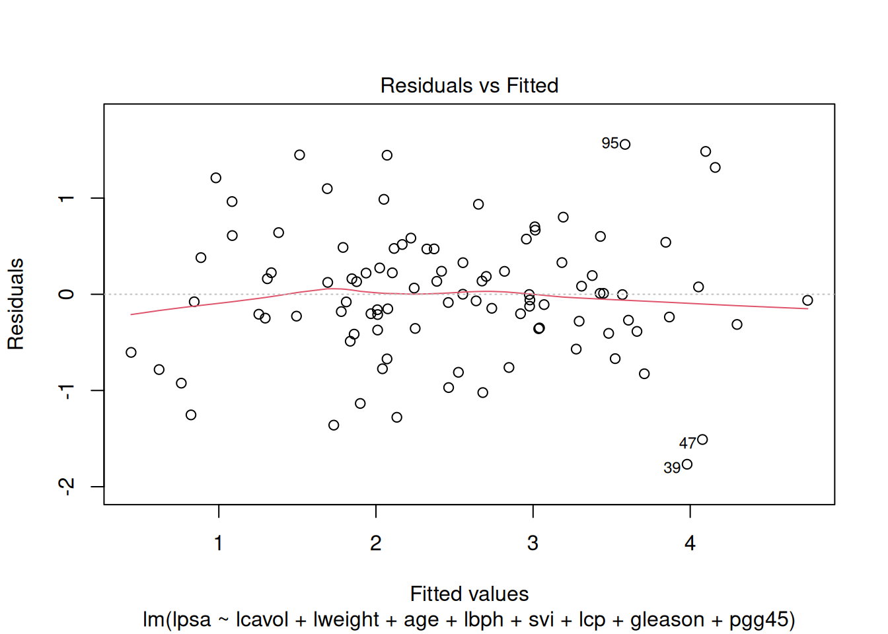
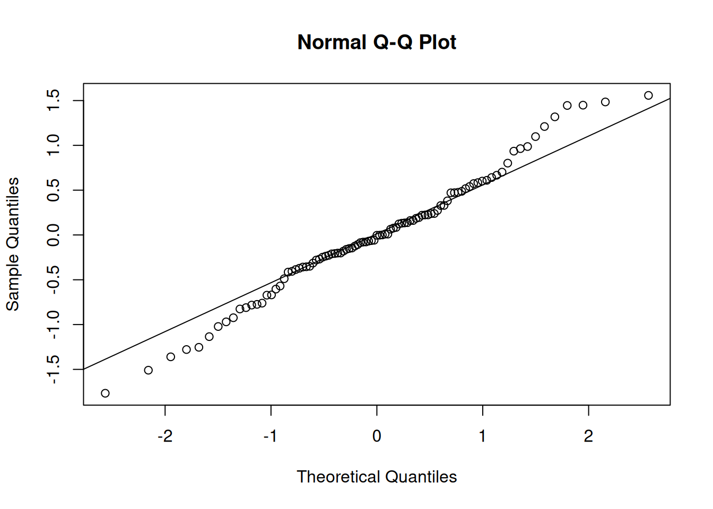
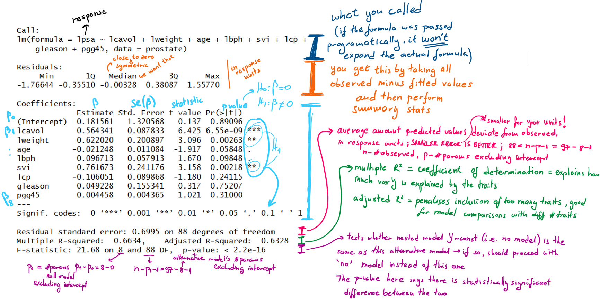
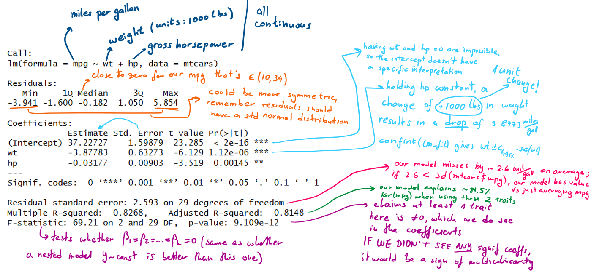

When you’re happy with the selected traits, report, use the guide example in Reporting
The regression of \(Y\) on \(x\) is the conditional mean \(E(Y|x) = m(x)\), where \(m(x)\) can take any form, but in a linear regression, it takes this form: \[\begin{gather} E(Y|x) = m(x) = \beta_0 + \sum_{j=1}^k \beta_jg_{j}(x) \text{ and } \\ var(Y|x) = \sigma^2 \end{gather}\] where \(\beta_j\) are the coefficients. Performing a regression means estimating \(\beta_j, ~ j = 0,..,k\).
Regression in the dictionary means “a return to a former state”
The sentence “regression to the mean” means if a variable is extreme on its first measurement, it will tend to be closer to the average on its second measurement and vice versa
Linear actually means linear in the coefficients, i.e. not necessarily a straight line but a linear combination (i.e an additive function) of complex and non-linear functions of x, with the coefficients ‘out the front’
Additive function \(f\) is such that this holds \[ f_{v_1+v_2}(x) = f_{v_1}(x) + f_{v_2}(x), \text{ and } f_{c*v_1}(x) = c*f_{v_1}(x) \] where \[ v_1 = (\beta_0, \beta_1, ..., \beta_k), ~ v_2 = (\alpha_0, \alpha_1, ..., \alpha_k)\] i.e. the coefficients of \(f(x)\).
See Maths for proof this holds for \(E(Y|x) = m(x) = \beta_0 + \sum_{j=1}^k \beta_jg_{j}(x)\)
When do I use a linear regression?
(a.k.a what question do I need answering so that the answer is “use a lin regression for that”?)
you are interested in inferring a relationship between a variable/trait Y and a (vector of) variable/trait(s)
you are interested in predicting Y based on a new value of the variable/trait(s)
This explanation leads to treating Y as a random variable and x as the known. Y is modelled as a deterministic function \(m(x)\) plus a mean-zero noise term i.e. the observation \((x_i, Y_i)\) satisfies \(Y_i = m(x_i) + \epsilon_i\), where for all \(i\), \(\epsilon_i\) are independent, \(E(\epsilon_i)=0\) and \(var(\epsilon_i)= \sigma^2\).
Note
If \(var(\epsilon_i)= \sigma_i^2\), it’s called heteroscedasticity, handling this TBA
When CAN I use this, what needs to hold up for me to even think about using it?
We have to check the assumptions hold. The assumptions are:
linear model for the mean, i.e. \(E(Y|x) = m(x)\) is linear
\(var(\epsilon_i)= \sigma^2\) i.e. var is the same for all \(i\)
the residue (error, noise) normality assumption of \(\epsilon_i \sim N(0, \sigma^2)\) we have to introduce if we would like to know how well our coefficients are estimated (for CIs and testing hypotheses like whether the coeffs differ from 0 i.e. where Y is varying of x)
To check these assumptions, you need to fit the model first, and then check the assumptions. For each assumption you do:
Plot observed vs fitted values: each data point is described by the observed \(Y_i\) and by the value \(m(x_i)\) you have come to i.e. the value on your estimated line), you are hoping to see points scattered randomly along the diagonal line of y = x
Plot residuals vs fitted values: each data point is described by the residual — observed \(Y_i\) minus \(m(x_i)\) — and \(m(x_i)\), you are hoping to see an equal amount of points above and below 0 at similar distances from 0 and spread across the x axis (if that is not the case, plotting residuals vs. a specific independent variable tells you which specific variable needs to be “fixed” e.g., if you see a curve here, you need to add a squared term of this specific variable)
Plot a normal QQ plot of the residuals: checks whether the distribution of residuals is \(\sim N(0, \sigma^2)\) - you’re hoping to see all the points on the diagonal
Note: each \(Y_i\) depends on \(x_i\), the normality assumption is per \(x_i\)
load(url("https://github.com/cran/ElemStatLearn/raw/refs/heads/master/data/prostate.RData"))lm1 <-lm(lpsa ~ lcavol + lweight + age + lbph + svi + lcp + gleason + pgg45, data = prostate)# looking at 1)plot(fitted(lm1), prostate$lpsa, xlab ="Fitted", ylab ="Observed")abline(0,1)

# looking at 2)plot(fitted(lm1), residuals(lm1), xlab ="Fitted", ylab ="Residuals")abline(h =0)

# I personally like this built-in version of fitted vs observables more, due to# the fitted curve, you'd want it to follow y = 0 as much as possible (not easy# when you have a smaller dataset, then it might be distracting)plot(lm1, 1:1)

# looking at 3)# Q-Q plots compare quantiles of the observed data to the quantiles of your theoretical distribution# qqnorm compares to N(0,1)qqnorm(residuals(lm1))# default distribution based on which the line is drawn is N(0,1)# it's just a line that draws through the 1st and 3rd quantile (because we believe# that all the points from our data coincide with data points in this distribution, # then so do the quantiles in our data and the theoretical quantiles, and we choose# to make a line through those, so that they are not favoured by a different mean/outliers)qqline(residuals(lm1))

If you care about interpretation of the predictors in this model, you need to check whether there is multicollinearity between the predictors. If any of the predictor’s variance inflation factor is over 10, the more likely multicollinearity is present and that predictor(s) should be dropped -> that decision should be based on more investigation, like pairwise correlation, domain knowledge and/or with a usage of Lasso or Ridge regression TBA.
car::vif(lm1)
lcavol lweight age lbph svi lcp gleason pgg45
2.102650 1.453325 1.336099 1.385040 1.955928 3.097954 2.468891 2.974075
How to assess if my lin model is likely a lin model?
Apart from doing everything in When CAN I?, especially 1), there is also:
The residuals summary should have a median around 0 in your reponses’s units, otherwise it might indicate your model is misspecified (should be confirmed with Q-Q plot)
\(R^2\), which is the coefficient of determination, measures the strength of the linear relationship between the traits and outcome and is between 0 and 1 i.e. the proportion of \(varY\) that is explained by your estimated m(x); an \(R^2>>0\) indicates a closer fit of the model to the data, and the adjusted \(R^2\) takes into account irrelevant predictors
The Residual standard error should be small, close to 0 in your response’s units
Overall p-value of the F-statistic test should tell you it’s a better model than no model
The output:

How to interpret it once I know it’s a likely a lin model?
Normally you want to see whether the trait(s) are in a relationship with \(Y\), and you would do so by testing whether the coefficients next to those traits are statistically significantly different from 0.
lm1 <-lm(lpsa ~ lcavol + lweight + age + lbph + svi + lcp + gleason + pgg45, data = prostate)summary(lm1)
Call:
lm(formula = lpsa ~ lcavol + lweight + age + lbph + svi + lcp +
gleason + pgg45, data = prostate)
Residuals:
Min 1Q Median 3Q Max
-1.76644 -0.35510 -0.00328 0.38087 1.55770
Coefficients:
Estimate Std. Error t value Pr(>|t|)
(Intercept) 0.181561 1.320568 0.137 0.89096
lcavol 0.564341 0.087833 6.425 6.55e-09 ***
lweight 0.622020 0.200897 3.096 0.00263 **
age -0.021248 0.011084 -1.917 0.05848 .
lbph 0.096713 0.057913 1.670 0.09848 .
svi 0.761673 0.241176 3.158 0.00218 **
lcp -0.106051 0.089868 -1.180 0.24115
gleason 0.049228 0.155341 0.317 0.75207
pgg45 0.004458 0.004365 1.021 0.31000
---
Signif. codes: 0 '***' 0.001 '**' 0.01 '*' 0.05 '.' 0.1 ' ' 1
Residual standard error: 0.6995 on 88 degrees of freedom
Multiple R-squared: 0.6634, Adjusted R-squared: 0.6328
F-statistic: 21.68 on 8 and 88 DF, p-value: < 2.2e-16
If some coefficients are not so different from 0, you might want to consider a simpler model without these traits included, and test whether the two nested models are the same, and then proceed with the simpler one (o/w if they are significantly different, proceed with the more complex model) - see Anova in testing TBA
Whether the intercept is significantly different from 0 or not matters for whatever your model represents i.e. the state of the outcome when all of your traits are 0 \(\rightarrow\) I would use this as a reality check
The report depends on what type your data is and whether it was scaled (affects interpreting coefficients and changes in your outcome), as well as whether your goal is predictions or variable interpretation (affects whether you care about having a “good” model seen by high adj \(R^2\) and significant F-statistic, but no significant predictors, or if you care about what is mostly contributing to the outcome’s variance).
Overall, you should present both the contextualised importance of your findings and the numbers (unstandardised regression coefficients, standardised if makes sense, standard errors, t values, residual standard error, residual df, adjusted \(R^2\) if multivariable, CIs and p-values).
All examples here assume you have been through the assessment of your linear model and are happy with it.
For now, outcomes are continuous and the tabs talk about predictors
Continuous, no scaling
summary(lm(mpg ~ wt + hp, data = mtcars))

Summary output
increasing the weight by 1000 lbs would result in a drop of 3.8773 miles/gallon i.e. one unit change of weight results in a drop of 3.8773 miles/gallon
an increase in 1 horsepower (gross) would result in a drop of 0.03177 miles/gallon i.e. an increase in 100 horsepower (gross) would result in a drop of 3.177 miles/gallon
the typical prediction would be off by ~2.6 miles/gallon
the model explains ~81.48% of the variation of miles/gallon, i.e. the adjusted \(R^2\) = 0.8148
Mixed, no scaling
Binary
It’s common to have some sort of binary in your predictors, like sex. If it is encoded as 0 and 1, R handles it regardless whether it is a factor or numerical, and the interpretation of its coefficient holds the same in both cases, just different naming, so it is instantly clear which level represented by the coefficient. The underlying equation is \(mpg = \beta_0 + \beta_1*wt + \beta_2*hp + \beta_3*I(vs == 1)\), where \(I()\) is an indicator function, returning 1 when the expression is true, so the reference is the ‘0’ group. In this case vs = 0 means engine is v-shaped, whilst vs = 1 means straight, as long as the levels match the labeled values!
Note: This also holds when it is any 2 integer values that differ by 1, factor or not (e.g. 1,2 or 4,5). If they do not differ by 1, it has to be a factor to be treated as a categorical binary (i.e. representing two categories)
summary(lm(mpg ~ wt + hp + vs, data = mtcars))
Call:
lm(formula = mpg ~ wt + hp + vs, data = mtcars)
Residuals:
Min 1Q Median 3Q Max
-3.4667 -1.4857 -0.4296 1.0341 5.7384
Coefficients:
Estimate Std. Error t value Pr(>|t|)
(Intercept) 35.38267 2.42564 14.587 1.31e-14 ***
wt -3.78003 0.63985 -5.908 2.35e-06 ***
hp -0.02542 0.01100 -2.312 0.0284 *
vs 1.36771 1.35296 1.011 0.3207
---
Signif. codes: 0 '***' 0.001 '**' 0.01 '*' 0.05 '.' 0.1 ' ' 1
Residual standard error: 2.592 on 28 degrees of freedom
Multiple R-squared: 0.8329, Adjusted R-squared: 0.815
F-statistic: 46.52 on 3 and 28 DF, p-value: 5.276e-11
# "factored" vs, notice vs_f became vs_f1 as a variable, meaning the reference # is vs_f0 i.e. the 0 groupmtcars_f <- mtcars %>% dplyr::mutate(vs_f =as.factor(vs))summary(lm(mpg ~ wt + hp + vs_f, data = mtcars_f))
Call:
lm(formula = mpg ~ wt + hp + vs_f, data = mtcars_f)
Residuals:
Min 1Q Median 3Q Max
-3.4667 -1.4857 -0.4296 1.0341 5.7384
Coefficients:
Estimate Std. Error t value Pr(>|t|)
(Intercept) 35.38267 2.42564 14.587 1.31e-14 ***
wt -3.78003 0.63985 -5.908 2.35e-06 ***
hp -0.02542 0.01100 -2.312 0.0284 *
vs_f1 1.36771 1.35296 1.011 0.3207
---
Signif. codes: 0 '***' 0.001 '**' 0.01 '*' 0.05 '.' 0.1 ' ' 1
Residual standard error: 2.592 on 28 degrees of freedom
Multiple R-squared: 0.8329, Adjusted R-squared: 0.815
F-statistic: 46.52 on 3 and 28 DF, p-value: 5.276e-11
(Imagine vs is also significant and it makes sense for it to be in the model):
increasing the weight by 1000 lbs would result in a drop of 3.78003 miles/gallon i.e. one unit change of weight results in a drop of 3.78003 miles/gallon
an increase in 1 horsepower (gross) would result in a drop of 0.02542 miles/gallon i.e. an increase in 100 horsepower (gross) would result in a drop of 2.542 miles/gallon
a straight engine (group 1) has a higher mpg by 1.36771 than v-shaped engines
the typical prediction would be off by ~2.6 miles/gallon
the model explains ~81.5% of the variation of miles/gallon, i.e. the adjusted \(R^2\) = 0.815
Categorical
Let’s say a variable has more than 2 levels, e.g. in this dataset, cars can have 4,6, or 8 cylinders. Let’s call each a category (you can make categories by binning the values you have e.g.). This adds k-1 dummy variables to the model, where k is the amount of categories, making the model: \(mpg = \beta_0 + \beta_1*wt + \beta_2*hp + \beta_3*I(cyl\_f == 6) + \beta_4*I(cyl\_f == 8)\),
mtcars_f <- mtcars %>% dplyr::mutate(cyl_f =as.factor(cyl))summary(lm(mpg ~ wt + hp + cyl_f, data = mtcars_f))
Call:
lm(formula = mpg ~ wt + hp + cyl_f, data = mtcars_f)
Residuals:
Min 1Q Median 3Q Max
-4.2612 -1.0320 -0.3210 0.9281 5.3947
Coefficients:
Estimate Std. Error t value Pr(>|t|)
(Intercept) 35.84600 2.04102 17.563 2.67e-16 ***
wt -3.18140 0.71960 -4.421 0.000144 ***
hp -0.02312 0.01195 -1.934 0.063613 .
cyl_f6 -3.35902 1.40167 -2.396 0.023747 *
cyl_f8 -3.18588 2.17048 -1.468 0.153705
---
Signif. codes: 0 '***' 0.001 '**' 0.01 '*' 0.05 '.' 0.1 ' ' 1
Residual standard error: 2.44 on 27 degrees of freedom
Multiple R-squared: 0.8572, Adjusted R-squared: 0.8361
F-statistic: 40.53 on 4 and 27 DF, p-value: 4.869e-11
increasing the weight by 1000 lbs would result in a drop of 3.18140 miles/gallon i.e. one unit change of weight results in a drop of 3.18140 miles/gallon
an increase in 1 horsepower (gross) would result in a drop of 0.02312 miles/gallon i.e. an increase in 100 horsepower (gross) would result in a drop of 2.312 miles/gallon
our reference group is cyl=4, for us meaning 4 cylinders, so our cyl=6 group has a lower mpg by 3.35902
our cyl=8 group has a lower mpg than cyl=4 by 3.18588, although it is not significantly diff from 0 difference
the typical prediction would be off by 2.44 miles/gallon
the model explains ~83.6% of the variation of miles/gallon, i.e. the adjusted \(R^2\) = 0.8361
Scaling
The term standardised coefficients refers to coefficients that have been standardised so as to make them comparable with each other (due to different magnitudes and units of independent variables), giving you the information which independent variables explain the dependent variable more. The values are between −1 and +1 and the larger the value, the greater the contribution of the independent variable to explaining the dependent variable. This doesn’t differ between continuous and categorical variables. Another interpretation we get from that is changes per standard deviations instead of per unit changes, for both the outcome and predictor.
The way to standardise coefficients is either run the model with every variable (dependent and independent!) as scaled (mean 0, std 1), or, on each unstandardised coefficient, multiply it by its variable standard deviation and divide by the outcomes standard deviation from the dataset that is used in the model.
Note on standardising categorical vars: you physically can’t run scaling on a factor, it has to be numerical for that to happen, so if you have a binary, turn the data into 0s and 1s, and if you have a categorical, make the dummy numerical binaries that would be in your model (k-1 of them, excludes reference group!)
You could also do the standardisation manually, but still requires making the dummy variables to, at the very least, extract the sd
There is no intercept when coeffs are standardised!
lm_unstd <-lm(mpg ~ wt + hp + vs, data = mtcars)summary(lm_unstd)
Call:
lm(formula = mpg ~ wt + hp + vs, data = mtcars)
Residuals:
Min 1Q Median 3Q Max
-3.4667 -1.4857 -0.4296 1.0341 5.7384
Coefficients:
Estimate Std. Error t value Pr(>|t|)
(Intercept) 35.38267 2.42564 14.587 1.31e-14 ***
wt -3.78003 0.63985 -5.908 2.35e-06 ***
hp -0.02542 0.01100 -2.312 0.0284 *
vs 1.36771 1.35296 1.011 0.3207
---
Signif. codes: 0 '***' 0.001 '**' 0.01 '*' 0.05 '.' 0.1 ' ' 1
Residual standard error: 2.592 on 28 degrees of freedom
Multiple R-squared: 0.8329, Adjusted R-squared: 0.815
F-statistic: 46.52 on 3 and 28 DF, p-value: 5.276e-11
# requires you to have everything numerical in the dataQuantPsyc::lm.beta(lm_unstd)
wt hp vs
-0.6136770 -0.2892039 0.1143775
# another way to reach them:coef(lm_unstd)[c("wt", "hp", "vs")]*c(purrr::map_dbl(list(mtcars$wt, mtcars$hp, mtcars$vs), sd))/sd(mtcars$mpg)
wt hp vs
-0.6136770 -0.2892039 0.1143775
We see wt has the most influence on mpg (decreases, but highest impact)
With one std deviation change of wt (sd(wt) = 0.9784574 * 1000 lbs = 978 lbs), we get a 0.61 std deviation decrease in mpg (sd(mtcars$mpg) = 6.02)
with binary variables, you can only claim the amount of influence it has, since a std of a binary isn’t interpretable
Practically the same as mixed and no scaling. Here we have genetic data. We will examine the association of the actn3_r577x SNP with the percentage change in strength of the non-dominant arm before and after exercise (NDRM.CH). The research team believes that the effect of genotype on our trait might differ between males and females, and we can examine this by including the Gender variable in our analysis.
Call:
lm(formula = NDRM.CH ~ factor(actn3_r577x) + factor(Gender),
data = fms)
Residuals:
Min 1Q Median 3Q Max
-67.376 -20.295 -3.903 16.691 186.805
Coefficients:
Estimate Std. Error t value Pr(>|t|)
(Intercept) 57.409 2.532 22.673 < 2e-16 ***
factor(actn3_r577x)CT 5.787 3.010 1.923 0.05501 .
factor(actn3_r577x)TT 9.967 3.360 2.966 0.00314 **
factor(Gender)Male -23.472 2.565 -9.151 < 2e-16 ***
---
Signif. codes: 0 '***' 0.001 '**' 0.01 '*' 0.05 '.' 0.1 ' ' 1
Residual standard error: 30.91 on 599 degrees of freedom
(794 observations deleted due to missingness)
Multiple R-squared: 0.1335, Adjusted R-squared: 0.1292
F-statistic: 30.76 on 3 and 599 DF, p-value: < 2.2e-16
the genotype is treated as two binary variables that compare the CT and TT genotypes with the CC genotype (treated as the baseline).
for Gender, Female is treated as the baseline so factor(Gender)Male measures the difference between males and females.
the regression model that is specified in R as NDRM.CH ~ factor(actn3_r577x) + factor(Gender) can be written mathematically as: \(\small Y=β_0+β_1I(actn3\_r577x=CT)+β_2I(actn3\_r577x=TT)+β_3I(Gender=Male)+ϵ\) where Y is the outcome, \(β_0\) is the estimated mean value of the trait for females with the CC genotype
the average percentage change in the non-dominant arm muscle strength is estimated at 57.409 for females with homozygous CC genotype
the effect in females of having the heterozygous CT genotype compared with CC is estimated to be 5.787, but this is not significantly different from zero at \(α = 0.05\).
the effect of TT genotype is estimated to be nearly twice as large (9.9), and is significant
for CC genotype males, the estimated percentage change in the non-dominant arm muscle strength is 57.409 − 23.472
because interaction between gender and genotype is not included in the model, we assume that the effect of genotype on the mean response is the same in males as in females, with the CT and TT mean response estimated to be 5.787 and 9.967 higher than for the CC genotype.
“Logged” values
Only dependent variable is log-transformed
\[E(V|x) = E(log(Y)|x) = \beta_0 + \sum_{j=1}^k\beta_jg_{j}(x)\] For one unit change of trait \(j\), it will result in one unit change of \(V\), however you are usually interested in the change in \(Y\), as that is your measured trait.
One unit change of trait \(j\) results in \((e^{\beta_j} - 1)*100\%\) percent difference (in geometric mean) of \(Y\). See math proof below for more information.
Some independent variables are log-transformed
E.g. \(Y=β_0+β_1x_1+β_2\log(x_2)+β_3\log(x_3)+ϵ\)
Let’s say we have \(x_3\) be \(r_1\), and it changes to \(r_2\):
The effects of the log transformed traits are still linear, so \(E(Y|r_2) - E(Y|r_1) = \beta_3 \times [ \log(r_2) – \log(r_1) ] = \beta_3 \times [\log(r_2 / r_1)]\);
Reporting this would be e.g. a 1% increase in x_3 leads to \(log1.01 \times \beta_3\) unit increase in \(Y \rightarrow\) which can be approximated (because it’s a small change) by \(0.01*\beta_3 \text{ or } \frac{\beta_3}{100}\)
Dependent and some independent are log-transformed
The situation we haven’t covered yet is reporting an increase in a log-transformed independent for a log-transformed dependent.
So for a 1% increase in \(x_3\) leads to \((1.01^{\beta_3}-1)*100\%\) percent change in the geometric mean of \(Y \rightarrow\) which can be approximated (because it’s a small change) by \(0.01*\beta_3 * 100 \% = \beta_3 \%\). Another way to report it would be that for each twofold increase in \(x_3\) leads to \((2^{\beta_3}-1)*100\%\) percent difference (in geometric mean) of Y.
Math proof:
You want a function of Y, not of logY: \[
\begin{gather}
\mathbf{x} - \text{realisation of predictors} \\
\mathbf{x_j} - \text{realisation of predictors like } \mathbf{x} \text{ where only } x_j \text{ is increased by 1 unit}\\
E(log(Y)|\mathbf{x_j}) - E(log(Y)|\mathbf{x}) = \beta_j \iff e^{E(log(Y)|\mathbf{x_j}) - E(log(Y)|\mathbf{x})} = e^{\beta_j} \iff \\
\frac{e^{E(log(Y)|\mathbf{x_j})}}{e^{E(log(Y)|\mathbf{x})}} = e^{\beta_j} \iff \frac{GeomMean(Y|\mathbf{x_j})}{GeomMean(Y|\mathbf{x})}= e^{\beta_j}
\end{gather}
\] Taking the exponent of the average log is the definition of a geometric mean: \[ e^{E(logY|x)} = e^{\frac{1}{n}(log(y_1) + .. +log(y_n))} = e^{\frac{1}{n}(log(y_1*..*y_n))} = e^{log((y_1*..*y_n)^\frac{1}{n})} = (y_1*..*y_n)^\frac{1}{n} \rightarrow \text{geometric mean} \]
Changing from unit to percentile
To report moving from the xth to the yth percentile:
Calculate the value of your predictor at both percentiles, find the difference, and multiply that difference by the coefficient: \(\beta _{\text{y-x}}=\beta _{\text{raw}}\times (q_{y\%,pred} - q_{x\%,pred})\)
R caveats/defaults I need to know about?
uses ordinary least squares which doesn’t assume any distribution for \(Y_i\)
implied intercept term unless you tell it otherwise
Non-NULL weights can be used to indicate that different observations have different variances (\(\epsilon_i\)), see more in details then
factor/categorical/continuous in the formula might change what the null is, hence what statistically different actually means - see Anova f-test in testing TBA
What can you use it for now?
You can use it for predicting, now for a given \(x_i\) you care about, determine a \(Y_i\)
If you want the maths behind it
How is \(m(x)\) an additive function? We know \(m(x) = \beta_0 + \sum_{i=1}^k \beta_ig_{i}(x)\). Let’s define \(f_{v_1}(x) = \beta_0 + \sum_{i=1}^k \beta_ig_{i}(x),\text{ where } v_1 = (\beta_0, \beta_1, ..., \beta_k)\); we need \(f_{v_1+v_2}(x) = f_{v_1}(x) + f_{v_2}(x), \text{ and } \\ f_{c*v_1}(x) = c*f_{v_1}(x)\) to hold true.
Roustaei N. Application and interpretation of linear-regression analysis. Med Hypothesis Discov Innov Ophthalmol. 2024 Oct 14;13(3):151-159. doi: 10.51329/mehdiophthal1506. PMID: 39507810; PMCID: PMC11537238. https://pmc.ncbi.nlm.nih.gov/articles/PMC11537238/
Jones L, Barnett A, Vagenas D. Linear regression reporting practices for health researchers, a cross-sectional meta-research study. PLoS One. 2025 Mar 20;20(3):e0305150. doi: 10.1371/journal.pone.0305150. PMID: 40111967; PMCID: PMC11925299. https://pmc.ncbi.nlm.nih.gov/articles/PMC11925299/
Jones L, Barnett A, Vagenas D. Common misconceptions held by health researchers when interpreting linear regression assumptions, a cross-sectional study. PLoS One. 2025 Jun 5;20(6):e0299617. doi: 10.1371/journal.pone.0299617. PMID: 40471888; PMCID: PMC12140278. https://journals.plos.org/plosone/article?id=10.1371/journal.pone.0299617
Hidalgo B, Goodman M. Multivariate or multivariable regression? Am J Public Health. 2013 Jan;103(1):39-40. doi: 10.2105/AJPH.2012.300897. Epub 2012 Nov 15. PMID: 23153131; PMCID: PMC3518362. https://pmc.ncbi.nlm.nih.gov/articles/PMC3518362/